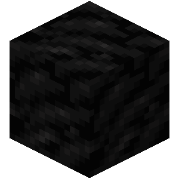
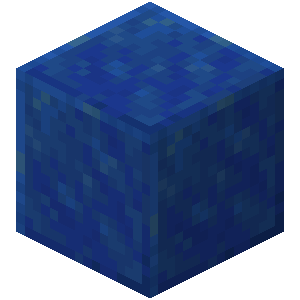

Tipos de Bloques
Minerales

Carbón

Cobre

Hierro

Oro
Redstone

Lápiz Lázuli

Diamante

Netherite
Construccion
Bloque de Cuarzo

Bloque de Cristal
Ladrillos de Piedra
Bloque de Concreto Blanco

Madera de Roble
Decoracion
Farol
Fogata

Maceta decorada

Luzapo Perlada
Linterna del Mar
Criaturas (Mobs)
Hostiles
Las criaturas hostiles son criaturas agresivas que siempre atacan al jugador a la vista.
Pasivos
Las criaturas pasivas son aquellas que no atacan al jugador directamente, incluso cuando son provocadas o atacadas.
Neutrales
Las criaturas neutrales son criaturas que pueden ser a veces pasivas y a veces hostiles hacia el jugador. Varias se vuelven hostiles al ser atacadas primero, pero otras pueden ser naturalmente hostiles y luego volverse pasivas en ciertas condiciones.
Tabla de Criaturas
| Imagen | Elemento | Función | Curiosidad |
|---|---|---|---|
| Caballo | Los caballos son criaturas domesticables que pueden servir para la exploración, las variantes pueden aparecer en uno de varios colores de piel diferentes que exhiben manchas o rasgos diferentes. | Los caballos esqueletos son las únicas criaturas no muertas pasivas, domesticables que no desaparecen en dificultad pacífica. (los caballos zombis también, pero no pueden ser domesticados) | |
 |
Cerdo | Un cerdo es una criatura pasiva que se encuentra comúnmente en la mayoría de los biomas de hierba. | Los cerdos son una fuente de chuletas de cerdo y se les puede equipar con una montura para ser conducidos. |
| Oso polar | Los osos polares son criaturas neutrales que viven en biomas fríos. | Según Jeb, los osos polares fueron agregados después de que su hijo, Björn, naciera. Coincidentemente, "björn" es el nombre sueco para el "oso". | |
| Enderman | El Enderman es un monstruo poco común de estatura alta, delgada y de color negro con ojos rosados. | Es originario de de la dimensión del End, puede teletransportarse y agarrar una serie de bloques. | |
 |
Zombie | Mob explosivo que ataca en sigilo. | Los zombis, los hombrecerdo zombis y los esqueletos y Esqueletos del Wither son las únicas criaturas capaces de llevar armadura, el resto de criaturas hostiles no pueden. |
 |
Esqueleto | El esqueleto es una criatura hostil común y no muerta que va equipada con un arco y flechas. | En Halloween, algunos de los esqueletos aparecerán con una calabaza en la cabeza con una probabilidad del 22.5% o calabaza iluminada con un 2.5%. |